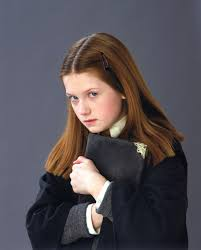

仲間の友情や成長が見もの！
-
物語の豊かな世界観が魅力的です。ホグワーツ魔法魔術学校や魔法の社会、
さまざまな魔法生物など、詳細に描かれた魔法の世界は読者を没入させます。
また、キャラクターたちの個性豊かな描写も見逃せません。
ハリー、ハーマイオニー、ロンをはじめとする主要キャラクターの成長や友情の絆が、物語に深みを与えています。
さらに、ハリー・ポッターの物語は単なる魔法の冒険だけでなく、
友情や家族の大切さ、正義と善悪の対立など、深いテーマを扱っています。
特に、主人公であるハリーの成長過程や苦悩、
そして彼が直面する試練は、読者に共感を呼び起こします。
そして、作中に登場する悪役たちの複雑な心理描写も印象的です。
ヴォルデモートやその仲間たちの動機や背景が掘り下げられており、
物語に深みと緊張感を与えています。
総じて、「ハリー・ポッター」シリーズは単なるファンタジー小説を超えて、
読者に考えさせ、感情を揺さぶる物語です。その魔法の世界とキャラクターたちの魅力は、今後も多くの人々に愛され続けることでしょう。
観てない方ぜひ！
Story
魔法の世界へようこそ
激しい魔法戦争
赤ん坊のころに両親を亡くし、
孤独な日々を過ごしてきた少年ハリー・ポッターは、
11歳の誕生日に自分が魔法使いであることを知らされる。
ホグワーツ魔法魔術学校へ入学し、
いままで知らなかった魔法界に触れ、
亡き両親の知人をはじめとした多くの人々との出会いを通じて成長する。
そして、両親を殺害した闇の魔法使いヴォルデモート卿と自分との不思議な因縁を知り、
対決していくこととなる。
予告
１年生
２年生
３年生
４年生
５年生
６年生
７年生 Part1
７年生 Part2
Cast
ハリー・ポッター／ダニエル・ラドクリフ
本作の主人公。 11歳の誕生日に自分が魔法使いであることを知り、 ホグワーツ魔法魔術学校のグリフィンドール寮に入ることになる。 赤ん坊のころ例のあの人に命を狙われたが、 歴史上唯一生き残り、例のあの人を消滅させたことから 「生き残った男の子」や「選ばれし者」と呼ばれる。 額には、当時受けた呪いのためにできた稲妻型の傷がある。 くしゃくしゃの黒髪と母譲りの緑の目が特徴で、 丸い眼鏡を掛けている。
ロン・ウィーズリー／ルパート・グリント
ハリーと同学年でグリフィンドール寮に入り、親友となる人物。 魔法族のなかでも純血の家系であるウィーズリー家の六男。 ムードメーカー的な存在だが、兄たちが全員優秀なためひけ目を感じている。
ハーマイオニー・グレンジャー／エマ・ワトソン
ハリーと同学年でグリフィンドール寮に入る、 マグル（非魔法族）生まれの魔女。 両親は歯医者。 はじめはハリーやロンとそりが合わないが、 のちに命を救われ親友となる。 頭脳明晰で、ホグワーツでも学年一の秀才となる。
ドラコ・マルフォイ／トム・フェルトン
ハリーと同学年の男子生徒。純血の名家であるマルフォイ家の出身。 プライドが高く常に高慢な態度を取り、 自身に逆らう者に対しては目上の者であっても、 卑怯な手段を用いてでも貶めようとする。 両親には溺愛されており、 自身も両親を侮辱する者に対してはあからさまな敵意を見せる。 一方でしばしば逃げ出したり、悲鳴を上げたりする臆病な面もある。
例のあの人
魔法界の歴史上において最強と言われる魔法使いのひとり。 あまたの闇の魔法使い、闇の生物を従え、 魔法界に暗黒時代を招いた。その名を口に出すことさえ恐れられ、 「名前を言ってはいけないあの人」、「闇の帝王」などと呼ばれる。 その強さと邪悪さは、一世代前に史上最強の闇の魔法使いと評された ゲラート・グリンデルバルドの所業を人々の記憶から完全に拭い去ったほどである。
others
ネビル・ロングボトム／マシュー・ルイス

ジニー・ウィーズリー／ボニー・ライト
ルーナ・ラブグッド／イヴァナ・リンチ
{kind=link}
{kind=link}
{kind=link}
{kind=link}
{kind=link}
{kind=link}